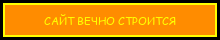
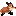
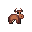
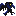
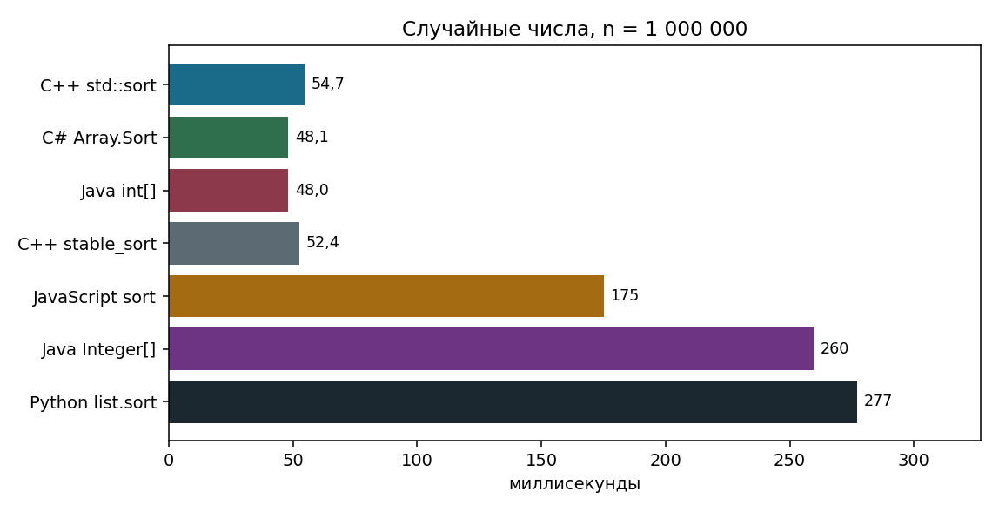
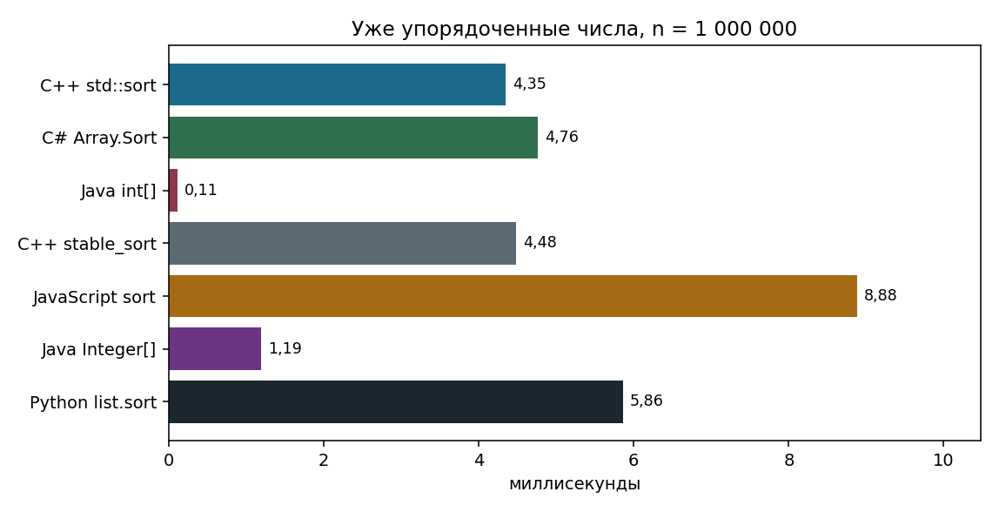
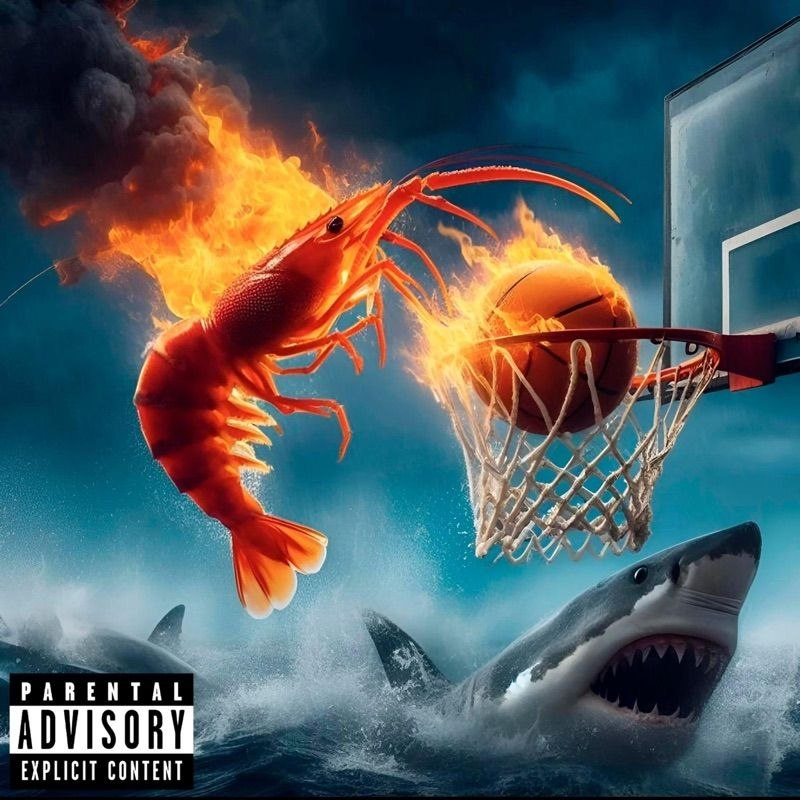
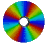

КИПУ имени Февзи Якубова
Команда 7
Сортировка в современных языках программирования
NCS Kawaii Mix
команда 7 ★ timsort ★ powersort ★ dual-pivot ★ introsort ★ вставки на коротком куске ★ пирамида спасает от квадрата ★ sort() без функции сравнивает строки ★ устойчивость значит равные не обгоняют ★ команда 7 ★ timsort ★ powersort ★ dual-pivot ★ introsort ★ вставки на коротком куске ★ пирамида спасает от квадрата ★ sort() без функции сравнивает строки ★ устойчивость значит равные не обгоняют ★





КИПУ ИМЕНИ ФЕВЗИ ЯКУБОВА · КОМАНДА 7
Подъячий Глеб, Керимов Андрей, Мамбетов Родион, Черакаев Антон, Кулиш Артём. Одна кнопка sort, семь разных машин внутри. Дальше пульт и объяснение, как эти машины устроены.
Сначала ловушка строк, потом две двойки, потом таблица на миллион. Ниже на странице разбор, откуда эти цифры.
Подъячий Глеб
list.sort. Timsort. С версии 3.11 серии сливаются по Powersort. Устойчивая. На случайном миллионе 277 мс, на готовом порядке 5,86 мс.
Керимов Андрей
int[] это Dual-Pivot Quicksort, 48 мс и 0,11 мс на готовом порядке. Integer[] это Timsort, 260 мс, порядок равных хранится.
Мамбетов Родион
Array.Sort это introsort, 48 мс, порядок равных ломается. OrderBy хранит порядок, потому что при равенстве смотрит исходный номер.
Черакаев Антон
std::sort это introsort, 55 мс, не устойчивый. std::stable_sort это слияние, 52 мс, порядок хранит.
Кулиш Артём
В Node и Chrome это Timsort, 175 мс. Без функции сравнения [10, 2, 1] становится [1, 10, 2].
На входе последовательность, на выходе те же элементы, но в порядке «меньше, потом больше». Сортировка ничего не добавляет и не выбрасывает. Если в массиве было две двойки, на выходе тоже две двойки. Вопрос только в том, какая из них встанет левее.
Сравнение смотрит на пару элементов и решает, кто меньше. Почти все встроенные сортировки сравнивают. Отсюда нижняя оценка: в худшем случае нужно порядка n log n сравнений. Линейные сортировки вроде подсчёта живут в другой вселенной: им нужно, чтобы ключи были целыми из узкого диапазона. Встроенные sort так не делают, потому что обязаны уметь строки, объекты и свои функции сравнения.
Память тоже разная. Introsort и быстрая сортировка почти на месте: дополнительно только стек рекурсии, это O(log n). Слияние и Timsort просят запасной массив порядка n. За эту память они покупают устойчивость и хороший лучший случай.
Двигай длину массива. Полоски показывают, во сколько раз вырастает работа относительно массива из 1 000 элементов. Квадрат убегает сразу. n log n растёт чуть быстрее прямой линии. Наши замеры легли на среднюю полоску: от 100 тысяч к миллиону время выросло примерно в 12-14 раз.
Прямая линия, O(n)
n log n, обычный случай Timsort, быстрой сортировки и слияния
Квадрат, O(n²). Так ведут себя голые вставки на длинном массиве и неудачная быстрая сортировка без защиты
Две двойки равны по значению. Буква А стояла левее буквы Б ещё до сортировки. Устойчивый алгоритм это не меняет. На порядок «от меньшего к большему» буквы не влияют: обе двойки и так раньше восьмёрки. Буквы важны, когда за числом стоит запись: два студента с одной оценкой, два товара с одной ценой, исходный номер строки.
В нашей проверке было не десять элементов, а 400 пар «значение, исходный номер». Сортировка сравнивала только значение. Короткий массив обманывает: introsort на куске короче порога доделывает работу вставками, а вставки как раз устойчивые. Поэтому C# и C++ на сорока элементах могли случайно сохранить порядок. На 400 элементах Array.Sort и std::sort порядок сломали. Python, JavaScript, объекты Java и std::stable_sort сохранили.
У чисел типа int своего «кто левее» нет: две одинаковые пятёрки неразличимы. Поэтому для int[] в Java устойчивость не спрашивают. Спрашивают, когда элемент это объект.
Идём слева направо. Кусок слева уже упорядочен. Очередной элемент несём влево, пока левый сосед строго больше. Равных не перепрыгиваем, поэтому вставки устойчивые. Кнопки листают каждый обмен отдельно. На n элементах в худшем случае это около n²/2 сравнений. На десяти элементах это копейки, на миллионе это катастрофа. Поэтому Timsort, introsort и Dual-Pivot отдают вставкам только короткие хвосты.
Порог в C# Array.Sort: кусок не длиннее 16. В MSVC std::sort порог 32. В Timsort короткую серию доращивают вставками до minrun, обычно от 32 до 64, чтобы дальнейшие слияния были ровнее.
Этот разбор у Глеба: так устроен Python. Те же серии стоят в объектах Java и в V8. Обычная жизнь данных не случайный шум. Журнал почти по времени, таблица почти по имени, массив уже отсортировали и дописали хвост. Timsort ищет готовые серии: куски, которые и так идут вверх или вниз. Нисходящую серию разворачивают. Слишком короткую добирают вставками. Потом серии сливают. Ниже каждый взгляд на соседнюю пару это отдельный кадр.
Мало найти серии. Надо решить, какие две сливать сейчас. Плохой выбор: приклеить крошечную серию к огромной, хотя рядом лежат две средние, которые дешевле соединить друг с другом. До Python 3.11 у Timsort был свой набор правил на стеке. С 3.11 CPython выбирает порядок слияния по стратегии Powersort (Munro и Wild): она ближе к оптимальному дереву слияния. Снаружи это тот же list.sort: устойчивый, дополнительная память O(n), на полностью готовом массиве почти один проход.
Наш миллион уже упорядоченных чисел Python разобрал за 5,86 мс вместо 277 мс на случайных. Алгоритм увидел одну длинную серию и почти не сливал.
Этот разбор у Антона: std::stable_sort в C++ это такое слияние. Два упорядоченных куска. Смотрим на их головы и забираем меньшую. Если головы равны, забираем из левого куска. Поэтому слияние устойчиво: более ранний равный элемент выходит раньше. Нужен третий массив, куда складывается результат. Если дополнительной памяти хватает, время O(n log n). Если памяти нет, стандарт разрешает более медленный путь O(n log² n). Кадры ниже показывают каждое сравнение голов.
Этот разбор у Андрея. Arrays.sort для int, long, float и double в Java 17 это Dual-Pivot Quicksort (Ярославский, Бентли, Блох). Берут два опорных элемента. Всё, что меньше левого опорного, уезжает влево. Всё, что больше правого, уезжает вправо. Середина остаётся между ними. Получается три части, и на каждой можно продолжать. Это быстрее классической быстрой сортировки на одном опорном, потому что за один проход массив делится на три, а не на две. Кадры ниже это схема на одном маленьком массиве, не построчная копия исходника Java.
Короткие куски добирают вставками. Если массив уже почти упорядочен, современная реализация замечает готовые серии и сливает их, поэтому наш упорядоченный миллион int занял 0,11 мс вместо 48. Устойчивости нет и для голых чисел она не нужна. Для Integer[] и других объектов Java вызывает другой алгоритм: устойчивый Timsort. На том же случайном миллионе объекты заняли 260 мс. Разница с 48 мс это цена объекта и сравнения, а не «Timsort плохой».
Этот разбор у Антона: так устроен std::sort. У Родиона тот же каркас в Array.Sort, только вставки включаются раньше, на куске короче 17, а не 32. Голая быстрая сортировка в худшем случае квадратичная: каждый раз опорный оказывается крайним, и глубина растёт до n. Introsort начинает как быстрая сортировка, но считает глубину. Если глубина больше примерно 2 log n, этот кусок досортировывают пирамидой. У пирамиды худший случай честный O(n log n). На практике предохранитель почти не срабатывает, и скорость остаётся как у быстрой сортировки. Память почти только стек, O(log n). Устойчивости нет: равные элементы свободно меняются местами при разрезании.
Так устроены C# Array.Sort (вставки, если кусок короче 17, иначе контроль глубины) и C++ std::sort в MSVC (вставки до 32). C# OrderBy идёт другим путём и устойчив. C++ std::stable_sort тоже другой путь, это слияние.
Этот показ у Артёма. Стандарт с ES2019 требует, чтобы Array.prototype.sort был устойчивым. Какой именно алгоритм, стандарт не говорит. Node.js 24 и Chrome сидят на движке V8, а V8 сортирует Timsort. Firefox и Safari устойчивые тоже, но машина внутри может быть другой. Наш замер это только V8.
Вторая ловушка важнее для защиты. Без функции сравнения элементы приводят к строкам. Строка «10» меньше строки «2», потому что символ «1» меньше символа «2». Число 10 при этом больше числа 2.
[10, 2, 1]
Без функции сравнения 10 превращается в строку «10» и встаёт между «1» и «2».
| Вызов | Алгоритм | Время | Память | Устойчивость | Лучший друг |
|---|---|---|---|---|---|
| Python list.sort | Timsort, Powersort | O(n log n), серия O(n) | O(n) | да | почти готовые данные |
| Java int[] | Dual-Pivot Quicksort | O(n log n) | O(log n) | для чисел не о чем говорить | голые числа |
| Java Integer[] | Timsort | O(n log n), серия O(n) | O(n) | да | объекты |
| C# Array.Sort | introsort | O(n log n) | O(log n) | нет | числа, скорость |
| C# OrderBy | устойчивая, с исходным номером | O(n log n) | O(n) | да | равные записи |
| JavaScript V8 | Timsort | O(n log n) | O(n) | да, это требует язык | массивы в браузере |
| C++ std::sort | introsort | O(n log n) | O(log n) | нет | числа на месте |
| C++ stable_sort | слияние | O(n log n) при памяти | O(n) | да | равные записи |
Один генератор, зерно 7, пять рисунков данных: случайные, по возрастанию, по убыванию, всего десять разных значений, почти упорядоченный (каждый 50-й элемент поменян с соседом). Размеры 10 тысяч, 100 тысяч и 1 миллион. Все языки читали один и тот же файл. Первая попытка выбрасывалась, дальше медиана пяти. Время это только вызов сортировки, без чтения файла.
Сборка Java, C# и C++ шла во временной папке с латинским именем. На этой машине javac портит кириллицу в полном пути.
| Реализация | Случайные | По возрастанию | По убыванию | Мало разных | Почти упорядочен |
|---|---|---|---|---|---|
| C++ std::sort | 54,7 | 4,35 | 5,65 | 8,86 | 4,92 |
| C# Array.Sort | 48,1 | 4,76 | 9,23 | 17,3 | 4,92 |
| Java int[] | 48,0 | 0,11 | 0,64 | 9,05 | 4,44 |
| C++ stable_sort | 52,4 | 4,48 | 8,04 | 17,3 | 4,36 |
| JavaScript, V8 | 175 | 8,88 | 8,94 | 84,3 | 20,3 |
| Java Integer[] | 260 | 1,19 | 6,65 | 130 | 4,04 |
| Python list.sort | 277 | 5,86 | 6,91 | 96,2 | 14,5 |


На случайных числах Java int, C# и C++ стоят рядом: 48, 48 и 55 мс. Python 277, объекты Java 260, JavaScript 175. Это цена языка. На готовом порядке адаптивные реализации схлопываются: Java int с 48 мс до 0,11, Python с 277 до 5,86. Массив из десяти разных значений тяжелее для устойчивых сортировок объектов: Python 96 мс, Java Integer 130 мс, а std::sort остаётся на 8,86 мс.
Сейчас Глеб. Имя sort одно, внутри пять языков и семь вызовов. Python: Timsort ищет готовые серии, с версии 3.11 сливает их по Powersort, равных не переставляет. На случайном миллионе 277 мс, на готовом порядке 5,86 мс.
Сейчас Андрей. В Java две функции. Для int это два опорных: 48 мс на случайных и 0,11 мс на готовом порядке. Для Integer это Timsort: 260 мс, порядок записей хранится.
Сейчас Родион. Array.Sort это introsort: вставки на коротком куске, пирамида при глубокой рекурсии, 48 мс, порядок равных ломается. Когда порядок нужен, берём OrderBy.
Сейчас Антон. std::sort и std::stable_sort. 55 и 52 мс на случайном миллионе. Первая работает на месте и порядок равных не обещает. Вторая сливает и порядок хранит.
Сейчас Артём. В V8 это Timsort, 175 мс. Без функции сравнения числа становятся строками. Массив 10, 2, 1 превращается в 1, 10, 2.
Сейчас снова Глеб. Выбор зависит от двух вещей: важен ли порядок равных и есть ли в данных готовые куски. Числа и скорость: std::sort, Array.Sort, Java int. Записи и прежний порядок: list.sort, объекты Java, OrderBy, stable_sort, sort с числовым компаратором.
Пока 0 из 0.
Запись остаётся в этом браузере и на диск проекта не уходит.
Детский кадр подписан: Родион. Следом молодой Глеб. Креветка после титров.
КИПУ имени Февзи Якубова
Сортировка в современных языках программирования
Лидер
Python. Timsort и Powersort.
Две функции
Java. Dual-Pivot для чисел, Timsort для объектов.
Предохранитель
C#. Introsort и устойчивый OrderBy.
На месте или с памятью
C++. std::sort и std::stable_sort.
Ловушка строк
JavaScript. Timsort в V8 и компаратор для чисел.
Кадр первый
Съёмочная группа.
Кадр второй
Волны без гарантии устойчивости.
Кадр третий
Кудри порядка n log n.
Архив
Родион. Снято задолго до курса.
Молодой Глеб
Уже на остановке. Сортировка ещё в пути.
Замер
Медиана пяти прогонов после прогрева.
После титров

Единственный, кто обогнал std::sort и при этом горел.
Порядок равных и готовые куски в данных решают, какую функцию брать.
Кредиты: курсор Kenney, CC0. Гифки OpenGameArt, CC0. Кнопки и наклейки по краям: gifcity.carrd.co. Шлейф Tinkerbell, mf2fm. Баннеры нарисованы для этой страницы. Радио: NCS Kawaii Mix, NoCopyrightSounds.

КОМАНДА 7 · КИПУ
Python, Java, C#, JavaScript, C++
28 октября 2026
Подъячий Глеб
Керимов Андрей
Мамбетов Родион
Черакаев Антон
Кулиш Артём
| Вызов | Алгоритм | Порядок равных |
|---|---|---|
| Python list.sort | Timsort, Powersort | хранит |
| Java int[] | Dual-Pivot Quicksort | для чисел неразличим |
| Java Integer[] | Timsort | хранит |
| C# Array.Sort | introsort | не хранит |
| JavaScript, V8 | Timsort | язык требует хранить |
| C++ std::sort | introsort | не хранит |
| C++ stable_sort | слияние | хранит |
Подъячий Глеб
Керимов Андрей
Мамбетов Родион
Кулиш Артём
Черакаев Антон